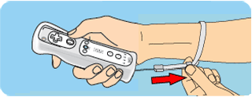
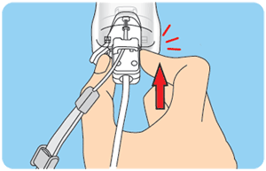
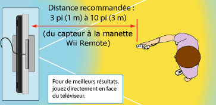

2 |
Consignes d'utilisation |
 |


Renseignements supplémentaires sur la manière d'utiliser la dragonne Vous aurez peut-être besoin d'effectuer des mouvements secs ou rapides avec la manette Wii Remote et le Nunchuk lorsque vous jouez à la Wii. Veuillez utiliser la dragonne pour réduire les risques d'échapper la manette, de l'endommager, d'endommager les objets se trouvant à proximité ou de blesser d'autres personnes.


Faites-vous assez de place. Vous vous déplacerez certainement beaucoup lorsque vous utiliserez la manette Wii Remote, alors faites bien attention de vous trouver dans des aires bien dégagées pour jouer. Assurez-vous qu'aucun meuble, aucun objet et aucune personne ne se trouvent dans l'aire de jeu pour éviter de vous cogner contre ceux-ci au cours d'une session de jeu. Comme l'indique le mode d'emploi de la Wii, il est recommandé de vous tenir à un minimum d'un (1) mètre de la télévision.


Ces informations sont également disponibles sur www.nintendo.com/healthsafety. |
 |
 |
 |